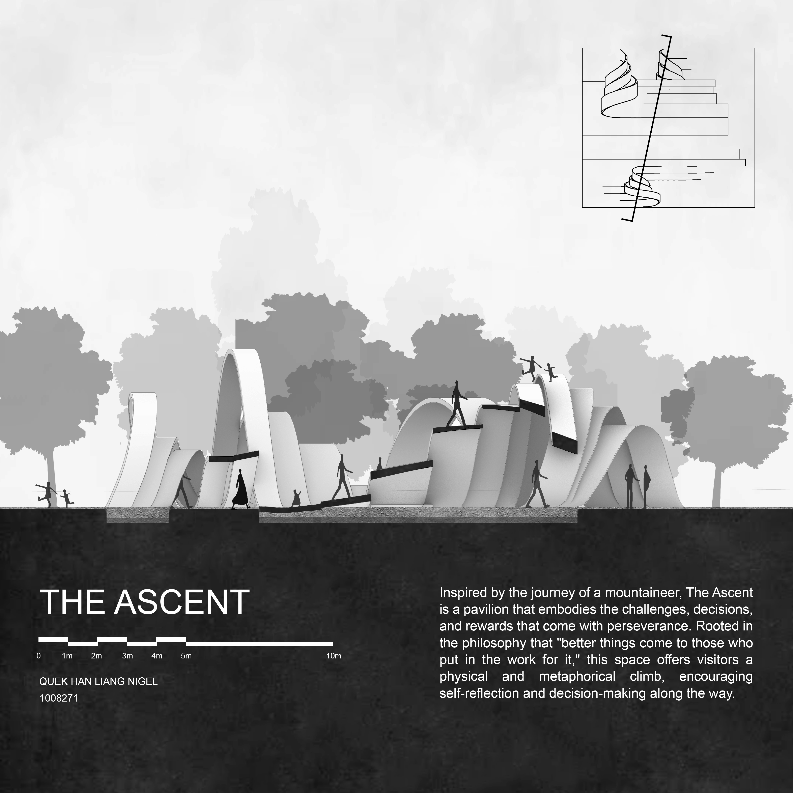
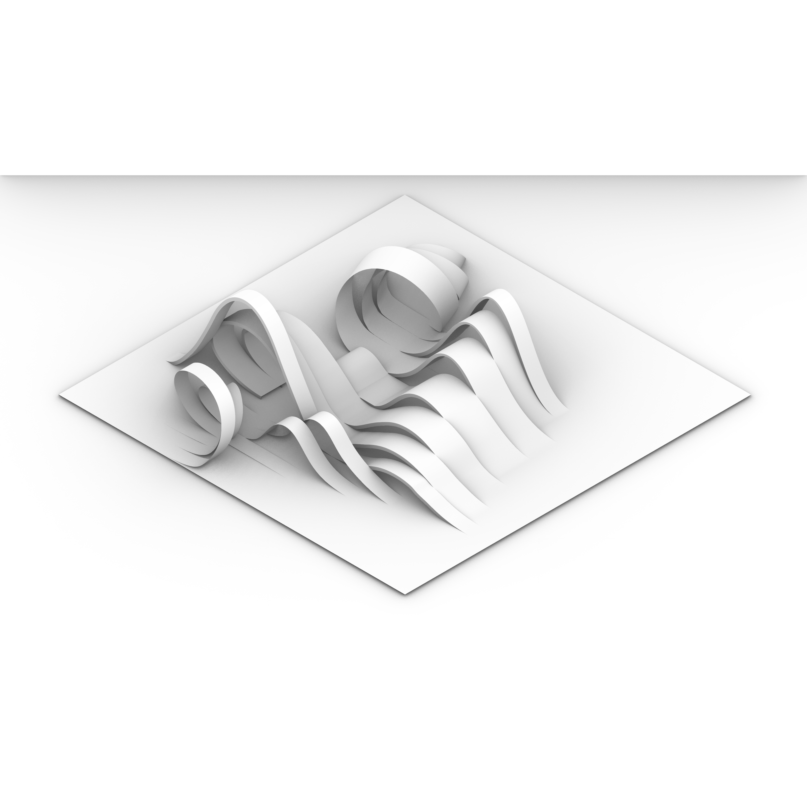
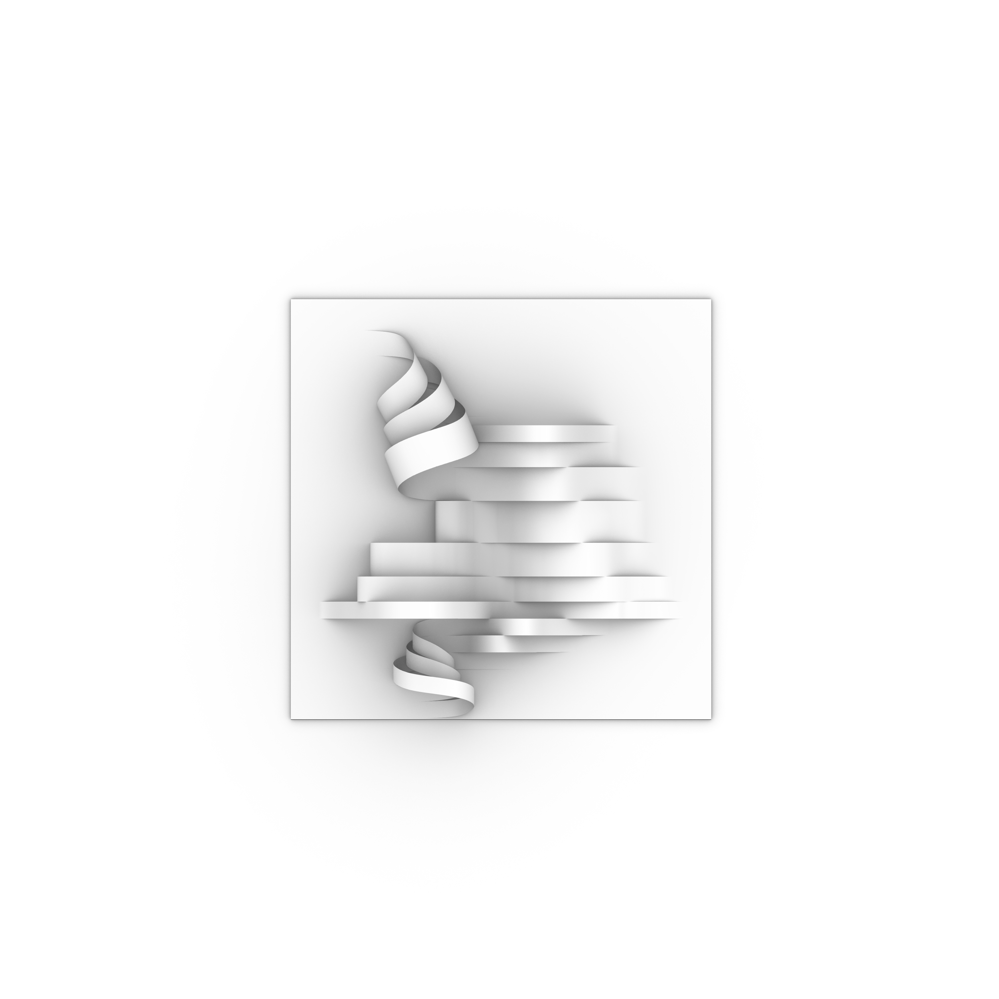
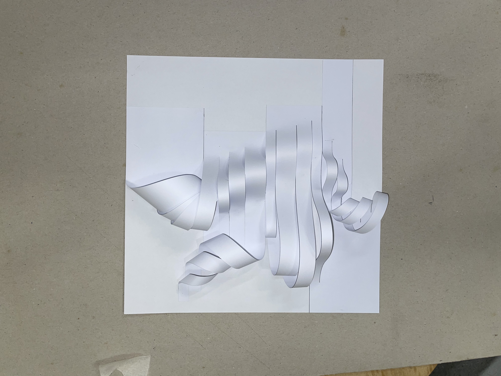

The Ascent
Exercise 1
Inspired by the journey of a mountaineer, The Ascent is a pavilion that embodies the challenges, decisions, and rewards that come with perseverance. Rooted in the philosophy that "better things come to those who put in the work for it," this space offers visitors a physical and metaphorical climb, encouraging self-reflection and decision-making along the way.

Isometric view

Section with concept description

3D massing model

Plan view

Physical paper model